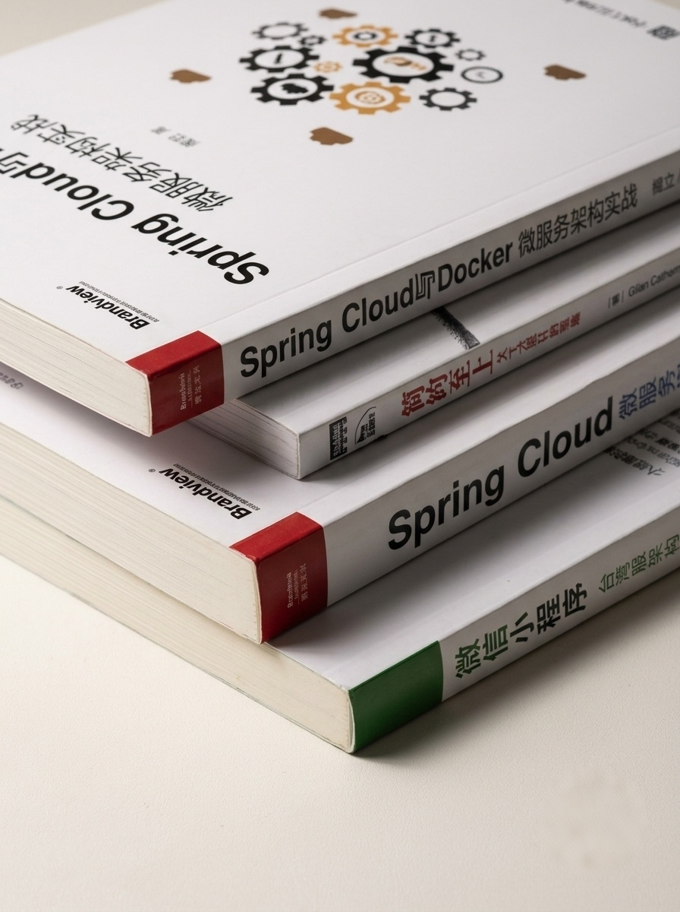

PROJECT / 01
PLATFORM ENGINEERING
local-cloud-hub
本地部署网关与服务管理平台，把多项目路由、公网入口、状态与运维动作收拢到一个可操作的工作台。
GatewayCloudflare Tunnel持续迭代
YUAN LU / PERSONAL ENGINEERING ARCHIVE
路漫漫科技是我的工程实践档案。这里记录从后端系统、部署入口到 AI 协作工具的构建、上线与持续维护。
PROFILE
关于我
我是一名有 10 年经验的软件开发者，长期做后端与系统工程。碰到重复流程，我会把它脚本化；服务入口复杂，就做成可管理的平台；AI 进入工作流，就把它接到真实交付里。
我相信好工程不是一次性演示，而是能被维护、被验证，并在下一次迭代里继续生长。
工程现场
不是罗列技术名词，而是把每一层真正接起来。
从业务域、接口契约和可演进的服务边界开始。
用路由、网关和统一入口把分散服务组织起来。
把部署、状态、回退和日常操作放进可观测的闭环。
让 AI 协作加入需求、实现、验证与持续改进。
精选项目
每个项目都来自实际问题，而不是为了填满作品集。
PLATFORM ENGINEERING
本地部署网关与服务管理平台，把多项目路由、公网入口、状态与运维动作收拢到一个可操作的工作台。

REALTIME APPLICATION
围绕实时房间、对弈和观战构建的在线象棋平台，覆盖后端服务、WebSocket 通信与完整测试流程。
BUILD LOG
不是为了制造“忙碌感”，而是让每一次推进都能沉淀为下一步的基础。
修复回退链路中断，让平台服务流量回到稳定路径。
调整启动时序，入口和平台服务在重启后自动恢复。
将个人工程实践作为可持续维护的公开档案。